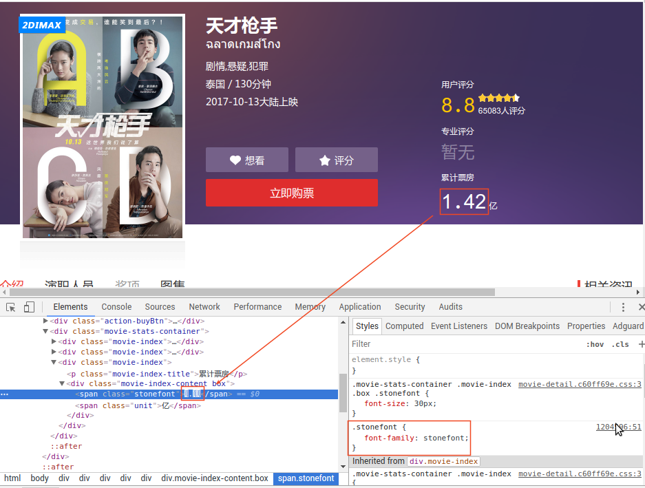
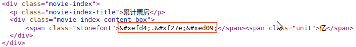
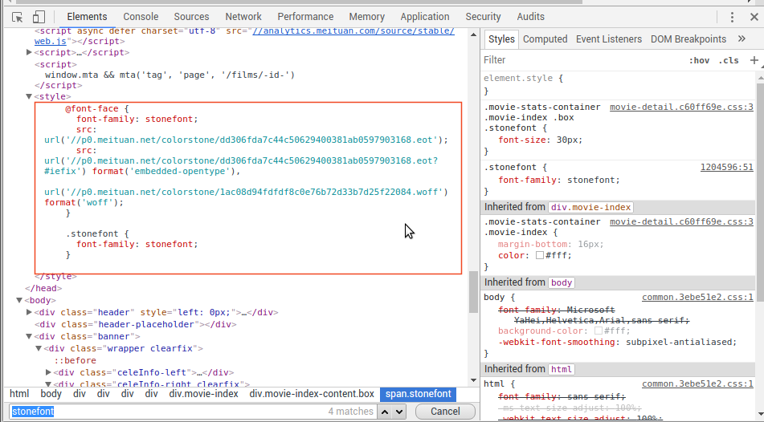
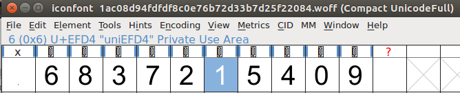
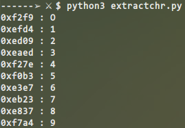

所谓道高一尺,魔高一丈.爬虫与反爬虫之间的斗争从来没有休止过. 然而正是这种博弈,推动着技术的不断发展前进,没有永远的胜利者, 也没有永远的失败者.只有短暂的互相压制.
缘起实验室小妹爬猫眼电影数据,遇到了这样的问题, 无法解决,来和我讨论时引起了我的注意,经过几个小时的研究,成功解决. 今天我们来就说一下 @font-face 方法的反爬虫解决策略.
Ubuntu 16.04 x64 + Python3
随便找一部电影,查看它的累计票房,显示如下:
起初我还以为是网页编码问题,但是看了一下源码是这样的:
"这个不就是 HTML Entity 嘛!",我的下意识反应就是这样的.但是查了查, 根本查不到这些 HTML 实体,然后以为是十六进制编码,用 python 解码了一下,啥也不是.
这个时候我注意到,当在样式中勾选掉 font-family 时,在网页上显示的字体也将失效, 进一步在 chrome 的 Elements 中搜索 stonefont,我们找到了下图这里.
到这里就算是找到线索了,然后上网搜索 @font-face 反爬虫, 很快就知道了这是通过自定义字体来进行网页数据的显示. 可以看到样式里有三个 url,删除前面两个不影响显示,而删除最后一个则字体显示不正常, 所以我们可以定位到实际的解析字体应该是 .woff 字体,当然 eot 也是字体, 但是对于我目前处境而言,解析 woff 字体肯定是正确的.所以剩下的问题就是, 如何找到 WOFF 字体的字形和自行编码值的映射表.这自然少不了要解析字体, 难道要自己去解析字体吗?我刚开始是这么想的,但是一想到字体结构, 就有点不想动手了,太繁琐了,于是就找到了大名鼎鼎的 fontforge.
工具在手,天下我有,但问题是,咋用到 python 中去呢? 很不幸, PIP 库里面没有 fontforge, 而且也没有人编译好 Python 扩展包,怎么办,自己动手丰衣足食.
sudo apt install libtool m4 automake autoconf sudo apt install libpangox-1.0-dev git clone git@github.com:fontforge/fontforge.git cd fontforge && ./bootstrap PYTHON=python3 ./configure make sudo make install sudo ldconfig
其中 configure 配置结果如下:
Configuration: Source code location . Build code location Destination prefix /usr/local Compiler gcc Summary of optional features: real (floating pt) double programs yes native scripting yes python scripting yes python extension yes freetype debugger no raw points mode no tile path no gb12345 encoding no potrace or autotrace no Summary of optional dependencies: Optional Library UseIt? HaveIt? WebsiteURL cairo check yes http://www.cairographics.org/ giflib check no http://giflib.sourceforge.net/ libjpeg check yes http://en.wikipedia.org/wiki/Libjpeg libpng check yes http://www.libpng.org/ libreadline check no http://www.gnu.org/software/readline libspiro check no https://github.com/fontforge/libspiro libtiff check yes http://en.wikipedia.org/wiki/Libtiff libuninameslist check no https://github.com/fontforge/libuninameslist zeromq (libzmq) no http://www.zeromq.org/ X Window System yes http://www.x.org/
这同时安装了 fontforge 的 GUI 程序以及 Python3 包.
首先用 wget 下载上面提到的 woff 字体,然后用 fontforge 打开, 然后勾选 Encoding/Compact,显示如下图所示:
很快的,我们发现 1 的编码值正好是 0xEFD4,正好和网页源码中的相对应. 所以下面我们只需要找到这些显示的字体和它们的编码值即可. 另一个很自然的疑问就是,如何能够自定义字体呢,经过查找, 维基给了很好的解释, 几个自定义字体的区域为:
Fontforge Python 包这里安装的位置为 /usr/local/lib/python3.5/site-packages,生成的文件如下:
fontforge.la fontforge.so psMat.la psMat.so但上述路径默认不在 sys.path 中,两种方法解决:
python3 -c "import sys; sys.path.append('/usr/local/lib/python3.5/site-packages'); import fontforge; f=fontforge.font(); print(f)";
在 ~/.local/lib/python3.5/site-packages 下面新建一个pkgs.pth,写入下面一行:
/usr/local/lib/python3.5/site-packages
fontforge 的相关 Python API 可以参考这里.
刚刚说过,为了识别字体,我们使用 pytesseract 包,安装方法如下:
sudo pip3 install pytesseract
然后我们就可以愉快的处理字体了,下面是代码:
#! /usr/bin/env python3 #! -*- coding:utf-8 -*- import fontforge import pytesseract from PIL import Image import os def ispua(val): if 0xE000 <= val <= 0xF8FF: return True if 0xF0000 <= val <= 0xFFFFD: return True if 0x100000 <= val <= 0x10FFFD: return True return False fontpath = "/home/bugnofree/Downloads/1ac08d94fdfdf8c0e76b72d33b7d25f22084.woff" fontobj = fontforge.open(fontpath) for glyph in fontobj.glyphs(): codeval = hex(glyph.unicode) if(not ispua(int(codeval,16))):continue imgname = codeval + ".png" glyph.export(imgname) image = Image.open(imgname) ocrval = pytesseract.image_to_string(image,lang = 'eng',config = '-psm 10') print("%s : %s" % (codeval,ocrval)) if(os.path.exists(imgname)):os.remove(imgname)
代码中唯一需要注意的是 pytesseract 需要配置 "-psm 10" 这一参数,至于其含义, 可以查看 tesseract 的帮助手册,我就不多说了.
处理结果如下所示:
这样找到映射表以后其他就都好说了,具体爬取数据不是我的兴趣所在,在此略过.
如果打开 fontforge 时提示 No module named 'gtk' import gtk, 那么打开 /usr/local/share/fontforge/python/graphicore.py 注释掉 import graphicore.shell 即可.